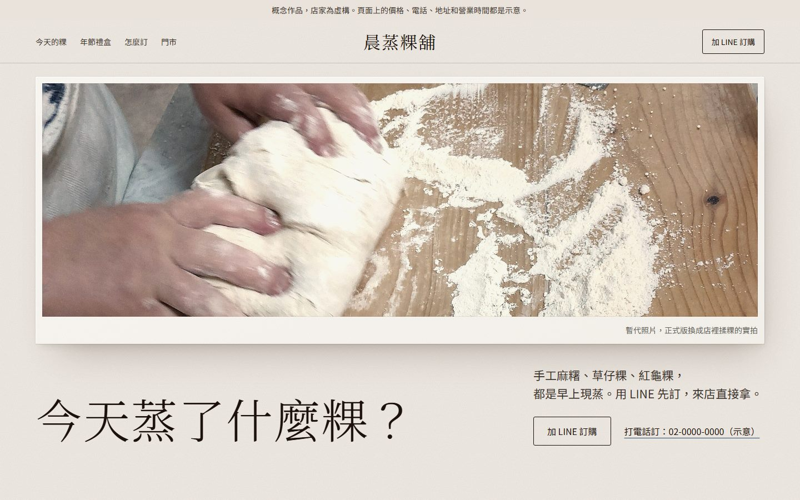
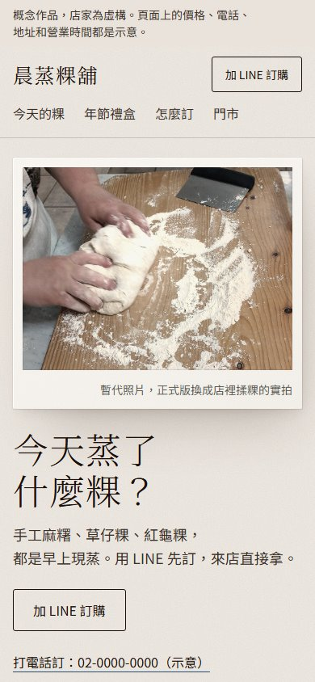
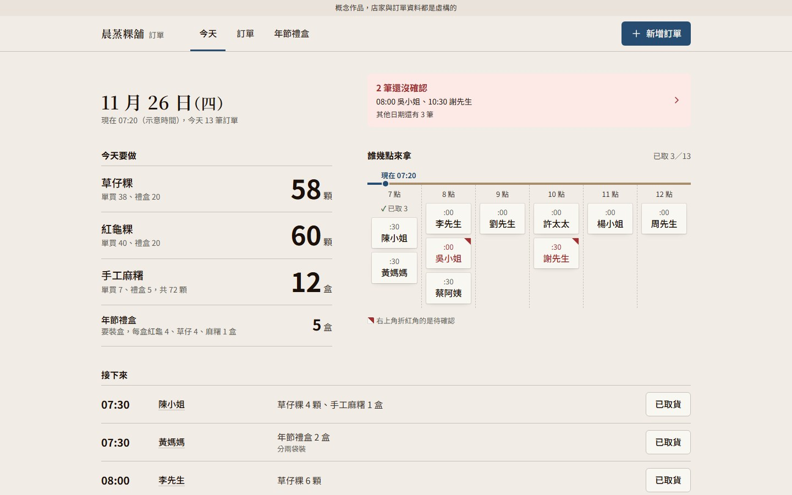
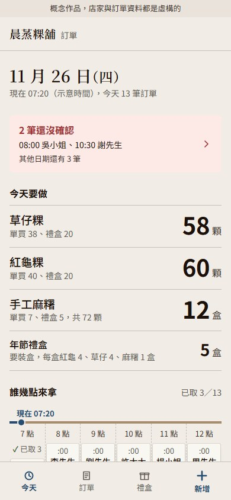

點心店的網站＋訂單後台
一頁式形象網站＋後台介面設計｜概念作品，店家為虛構
假想一間只做早上的粿店，前台和後台都做了。客人在網站上看今天有什麼粿、加 LINE 預訂；老闆娘把 LINE 和電話接到的訂單記進後台，清早打開就看到每種粿要蒸幾顆、誰幾點來拿，客人來拿時按一下就標成已取貨。




- 網站
- 三種粿做成可以點的紙條，點開看內餡、份量和價格；價格、電話、地址都標「示意」
- 後台
- 今天要做幾顆、誰幾點來拿、訂單篩選與搜尋、新增訂單、年節禮盒；按錯可以復原。訂單由老闆娘自己記進來，沒有和 LINE 自動串接
- 照片
- 網站先用 Wikimedia Commons 的照片暫代。攝影：Anna.Massini（CC BY 4.0）、Shixart1985（CC BY 2.0），都已調色並裁切